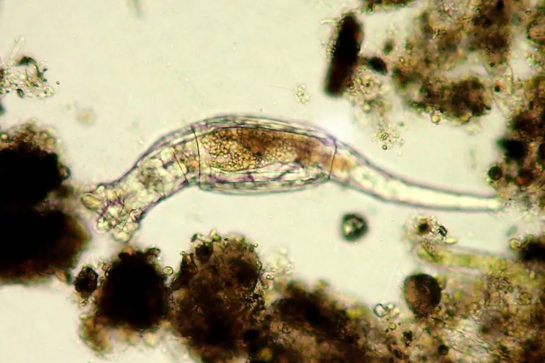

其他无脊椎动物 · 动物界
轮虫 Rotaria rotatoria

体长不足一毫米的微小淡水动物，头部轮盘上的纤毛不断旋转制造水流滤食，能耐受干燥进入隐生状态。
- 分类
- 门轮形动物门纲蛭态纲目蛭态目科轮虫科属轮虫属
- 栖息环境
- 淡水池塘、沟渠、水坑、苔藓与湿润土壤，可进入隐生状态
- 地理分布
- 世界各地的淡水与湿润环境，中国各地静水体常见
- 保护级别
- 无保护级别；为水体生态重要组成与天然饵料
物种志
轮虫是一类微小的多细胞动物，体长通常只有零点二至零点五毫米，肉眼几乎看不见。它的身体呈长圆筒形，可分为头、躯干和足三部分，头部有一个由两圈纤毛组成的轮盘，纤毛不断摆动时看起来像两个旋转的轮子，轮虫之名由此而来，轮盘制造的水流把食物送入口中。躯干外有一层透明的角质甲，足部能伸缩，末端有趾，可附着在基质上。
它分布于世界各地的淡水池塘、沟渠、水坑、苔藓和湿润土壤中，在中国各地的静水体中都很常见，以细菌、单细胞藻类和有机碎屑为食。蛭态纲的轮虫几乎只有雌性，靠孤雌生殖繁殖，卵无需受精即可发育，种群扩张极快。环境干旱时，它能把身体缩成桶状进入隐生状态，代谢几乎停止，遇水后可复苏，这种能力使它能生在临时水洼和干苔藓中。它尚无保护级别，是水体生态的重要组成，也是鱼类和甲壳类的天然饵料，还被广泛用于生态毒理试验。
形态与习性
- 体长通常零点二至零点五毫米
- 轮盘头部两圈纤毛旋转，制造水流滤食
- 身体分头、躯干、足三部分，外有角质甲
- 栖息淡水池塘、沟渠、苔藓与湿润土壤
- 生殖蛭态纲几乎只有雌性，行孤雌生殖
- 隐生干燥时缩成桶状，遇水可复苏
趣味知识
- 它头部的纤毛转起来像两个小轮子，轮虫的名字就是这么来的。
- 干透的苔藓里可能藏着它缩成的桶状体，滴水就能复活。
- 它几乎全是雌性，不用交配就能一代代繁殖下去。